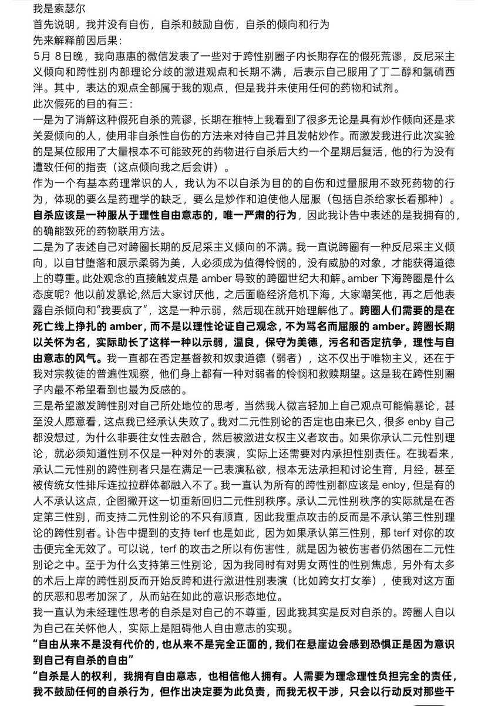
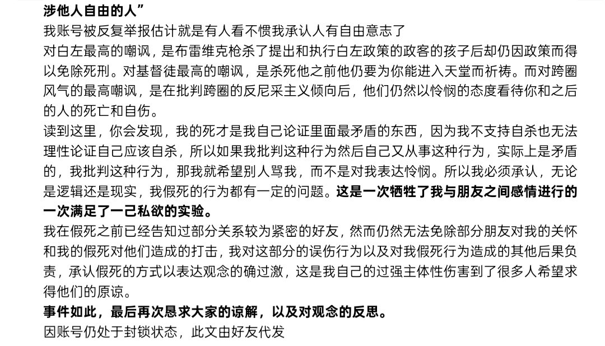

孙悟元
@wuyuandev
@Sorcerer1311 嗯，同样的也这么祝福你，别让我再看到你的讣告。
「表达的观点全部属于我的观点,但是我并未使用任何药物和试剂」


蘑菇盆栽🍄
@loveforeversfy
省流：是假死 原因见下文
因@Sorcerer198964 的账号暂时处于封禁状态，所以他拜托我帮她把她想说的话发布。本人代其发布不代表我支持他的部分或全部观点和做法。
俺已经狠狠骂过这人了。。。 https://t.co/Ztx43jQ5WA https://t.co/SMXl8E6gcG
索瑟尔 𝓢𝓸𝓻𝓬𝓮𝓻𝓮𝓻🍥
@Sorcerer1311
你最好是无声无息
雪风之死确实比较有尊严了 https://t.co/0Qp01IBJfM